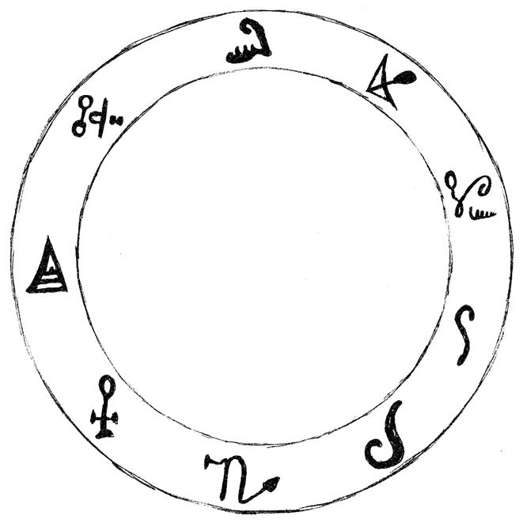
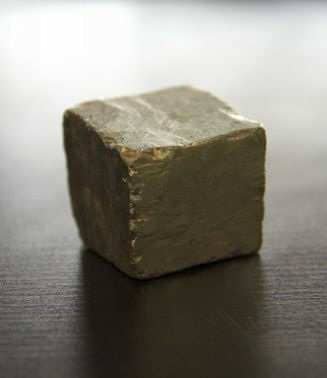
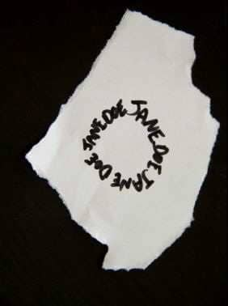
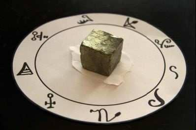

If you know the person you want to attract, these are the ritual instructions you need. This is the most powerful ritual in the book.
You can perform this at any time of the month, but there are two times that are particularly powerful. If you have limited contact with the person you are aiming to enflame, it is best to begin the ritual on the evening of a New Moon, and perform it for five nights in a row.
If there is already some warmth and friendship between the two of you that seems close to being passion, then the best time to begin is five days before a Full Moon. Perform this five nights in a row, ending on the Full Moon.
At one point in the ritual you will be asked to burn three red candles. Never burn a candle unless it is safe to do so. I don’t want to sound patronizing, but I know of several occultists who’ve done simple candle rituals and invited disaster through fire. Candles may seem harmless, but many homes and lives are destroyed each year by fires that started with a candle. Bear in mind that you are lighting a fire inside your home. This may sound over-cautious, but it is a serious point.
In terms of economy, the best way to get three red candles is to buy one and snap it into three pieces. Make sure each candle is set in a holder that keeps it safe and secure.
First, you need to prepare a magickal ring. This can be copied from the following drawing. If you prefer you can print it out - you can download this my website:
http://galleryofmagick.com/images/

If you do print it out, it helps if you draw over all the symbols yourself, with a black pen. You can use any paper, and this doesn’t have to be an elaborate operation. Cut the circle out, and set it aside until you actually begin the ritual.
It helps to have a small block of Pyrite, which can be obtained from many occult suppliers, crystal shops and so on. It looks like this:

If you can not find pyrite, a small block of any metal will work, with iron being the best. If you can not get a small block of metal, a stone will do the job. Whatever you use, it should be small enough to fit inside the magick circle you’ve drawn.
It is time for the ritual itself to begin. Find some time and space to be alone.
Bathe or shower, as though preparing to have sex with the person you desire.
For best results, find a comfortable place to work without any distractions. You may want to dim the lights or close the curtains if it is daytime. If it is warm enough, and if you find it a lustful experience, perform the ritual naked. Otherwise, dress in a way that makes you feel attractive.
Now take a fresh sheet of paper of any kind, and tear off a small scrap. Make sure there are no straight edges – the scrap should have a torn edge all around. On this, write the name of the person you wish to seduce. Write the names several times, to make a circle. It should looking something like this.

Place this scrap of paper face down in the middle of the magickal ring, so that you can no longer see the written name. Now place your Pyrite, or other heavy object, over the scrap of paper to hold it in place. Consider that the person you are attracting is now held within the powers of this magickal ring.

Ensure that three red candles are placed nearby, but do not light them yet.
Say the following words out loud.
‘I am grateful for all that I have. I am humble when I revel in the wonders of power.’
As you say the first sentence take a few moments to think of things that you are truly grateful for. This may be the roof over your head, a movie you watched, a good cup of coffee. Don’t try to be grand and impressive, but simply think of recent pleasures that genuinely make you feel grateful.
As you read the second sentence, you are making a pact. You are promising that when you have the power to seduce with magick, you will be joyously impressed and grateful for the power, but you will not be boastful or arrogant about your abilities. Consider these thoughts as you say the words.
If you need to, say these sentences three times, to make sure you actually feel the words.
You should light your three red candles.
Now comes the part of the ritual here you summon up the power of fire, heat and passion. Say the following words out loud, vibrating them through your throat.
Descendimus ab aere.
(DESK-END-IM-US AB AIR)
Ut ascendat et descendat.
(UT ASK-END-AT ET DESK-END-AT)
Motus inter duos.
(MOW-TUS INT-ER DEW-OS)
Nova inventa in lucem.
(NOVA INVENTA IN LOOCH-EM)
Insigne corpus ex elementis.
(IN-SIG-NAY CORP-US EX ELL-EM-ENT-IS)
Non est accidens.
(NON EST AXE-ID-ENS)
Mundus in mensa mea erant.
(MUND-US IN MENSA MAY-AH AIR-ANT)
Miscere cum lapidibus ferrum ad caeruleum virides gemmas.
(MISK-AIR CUM LAP-ID-IB-US FAIR-UM AD CARE-UL-EE-UM VI-RID-EES GEM-ASS)
Et venit, et posthac futura.
(ET VEN-IT ET POST-HACK FUT-OORA)
Non sunt ossa mea.
(NON SUNT OSSA MAY-AH)
Specto, locus est medium.
(SPECK-TOE, LOW-KUS EST MED-EE-UM)
Ut ambules in via ignis.
(UT AMB-YOU-LEZ IN VEE-AH IG-NIS) Tempore movetur.
(TEMP-OAR-RAY MOVE-EH-TOUR)
Imagine the sun. Imagine it as a vast ball of heat and flame, but then see it shrinking, so that in moments it becomes a star. As the sun shrinks, it moves inside your heart and resides there. Imagine this tiny pinprick of light within your heart, containing all the massive power and heat of the sun.
Don’t worry if your imagination is not perfectly clear. All you need to do is imagine that the sun has shrunk and is now a tiny star in your heart.
You should now being to picture the person you desire, and hear their name in your head. You can begin to masturbate at this point, but it is not essential. Masturbation is an extremely potent way to add energy to a working, but it requires some control because you do not want to reach orgasm until later in the ritual. It’s your choice, but for the best results I highly recommend masturbation.
For several minutes, picture yourself with the person you desire. Imagine sexual acts and a strong passion and desire between the two of you.
Once you feel that your lust for the person is strong, say these words:
Nades, Suradis, Maniner
(NAR-DES, SUR-AH-DIS, MAN-IN-ERR)
As you say the words, know that you are summoning spirits of lust. You may sense their presence upon first uttering the words. Repeat the words two more times, and you should feel a slight change in the atmosphere.
Visualize an orange-rosy light before you. By calling the spirits, you have summoned this light.
You can see an impression of this rosy light at
http://galleryofmagick.com/images/
Picture the person you want to be with inside this rosy light, and picture yourself there as well. Imagine that you are together, kissing, making love. When you can see this and feel the pleasure of it, say the words:
Sader, Prostas, Solaster
(SAR-DER, PROS-TAS, SOL-AST-ER)
Speak directly to these spirits of lust, with authority, while picturing your target. Repeat these spirit names over and over.
It’s vital that you picture yourself in lustful situations with your target. Don’t hold back with these images. Picture yourself doing exactly what you desire, and picture your target loving the sex. DO NOT picture your first date, or how you plan to get together. Picture the result, not the process. Only picture lustful sex, as though it is happening now. If you are masturbating, take yourself close to orgasm as you picture these lustful acts.
After a minute or two say the following (but replace N. with the full name of your target.) Remember you are speaking to the spirits named above.
‘Bring me N.
Enflame his/her mind and body with passion for me and you may feed on the energy and ecstasy of our sex to your satisfaction.’
If you are masturbating, continue to picture the object of your affection until you reach orgasm.
Wipe a small amount of your sexual fluids on the scrap of paper in the center of the ring. Not too much, because you will be doing this for five nights.
If you are not masturbating (or if you are masturbating but can’t reach orgasm), simply let the images fade away. To close the ritual say the following words, vibrating each word through your throat.
Venerandum ignis non timeo.
(VEN-ER-AND-UM IG-NIS NON TIM-EE-OH)
Et ignis non tollit.
(ET IG-NIS NON TOH-LIT)
Ignis concordiam facit.
(IG-NIS CONC-ORD-EE-AM FASS-IT)
Blow out the candles.
The ritual is over. Put your magickal implements away where they will not be disturbed again until you need them, and do not think about the result you are seeking. To distract yourself you should cook, eat, sing, talk to a friend, but do not sit around wondering whether the magick will work. The work is done, so get on with something else.
Repeat the ritual for five nights. One the final night, let the candles burn down until they go out – but only if it is safe to do so. Never leave then unattended.
Once the ritual is complete for the last time, roll the scrap of paper up into a ball, then wrap that up in the magickal paper ring you drew. Screw it all up, and bury it somewhere nearby, preferably on your property. If you have no nearby place to bury it, there is no urgency to get rid of it – so you don’t need to wander the streets at night looking for a suitable place to dispose of it – but within one day find somewhere to bury it that is not a graveyard.
When you next see the target of your ritual, act as you normally would, but visualize a veil of white light wrapping itself around the person. Take just a few seconds to visualize this, then carry on as normal.
It will not be long before you are given a sign that something has changed between you. The magick has worked and how you deal with it is up to you.